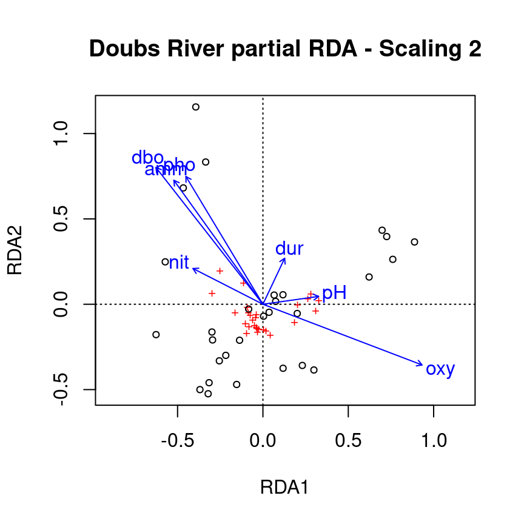

Chapter 7 Partial Redundancy Analysis
Partial RDA is a special case of RDA in which the response variables \(Y\) are related to explanatory variables \(X\) in the presence of additional explanatory variables \(W\), called covariates (or covariables). As in partial linear regression, the linear effect of \(X\) variables on the \(Y\) variables are adjusted for the effects of the covariates \(W\). For this, a RDA of the covariables \(W\) on the response variables \(Y\) is first performed. The residuals of this RDA are then extracted, i.e. a matrix \(Y_{res}|W\) containing the \(Y\) response variables in which the effect of \(W\) was removed. The partial RDA corresponds to the RDA of \(X\) on \(Y_{res}|W\). All statistics previously presented for RDA also apply for partial RDA.

Figure 7.1: The basic structure of a redundancy analysis (RDA).
Partial RDA has several applications. It is a powerful tool when users what to assess the effect of environmental variables on species composition while taking into account the variation due to other environmental variables that are not the focus of the study. A common example of this in community ecology is to test the importance of environmental variables while controlling for the effect of space. Partial RDA can also be used to control for well-known linear effects, to isolate the effect of a single explanatory variable, or to analyse related samples.
7.1 Example: Partial RDA on Doubs River data
In R, a partial RDA is performed in the same way as the RDA we used previously, using rda(). As a demonstration, let’s assess the effect of water chemistry on fish species abundances (spe.hel) while controlling for the effect of topography.
# Subset environmental data into topography variables and
# chemistry variables
env.topo <- subset(env.z, select = c(alt, pen, deb))
env.chem <- subset(env.z, select = c(pH, dur, pho, nit, amm,
oxy, dbo))
# Run a partial RDA
spe.partial.rda <- rda(spe.hel, env.chem, env.topo)Note: You can also use a formula syntax like
Y ~ X + Condition(W), whereCondition()allows you to control for the covariates.
# Alternative syntax for the partial RDA:
spe.partial.rda <- rda(spe.hel ~ pH + dur + pho + nit + amm + oxy + dbo + # these are the effects we are interested in
Condition(alt + pen + deb), # these are the covariates
data = env.z)7.1.1 Interpreting partial RDA output in R
The output of a partial RDA is very similar to the output discussed in the previous section on RDA. The key difference is that we have covariates in our model, which means we can see how much variation is explained by these additional, but not “interesting” variables. Once again, the first section of the summary contains the pieces we need to verify the performance of our partial RDA. Let us break it down:
summary(spe.partial.rda)...
## Partitioning of variance:
## Inertia Proportion
## Total 0.5025 1.0000
## Conditioned 0.2087 0.4153
## Constrained 0.1602 0.3189
## Unconstrained 0.1336 0.2659
...- Conditioned Proportion: variance of \(Y\) explained by \(W\) (41.53%)
- Constrained Proportion: variance of \(Y\) explained by \(X\) .(31.89%)
- Unconstained Proportion: unexplained variance in \(Y\) (26.59%)
How would you report these results? You could say something like: “Water chemistry explains 31.9% of the variation in fish community composition across sites, while topography explains 41.5% of this variation.”
7.1.2 Significance testing
As with the RDA, we can interpret the significance of our model with two key pieces of information.
- What is the model’s explanatory power?
# Extract the model's adjusted R2
RsquareAdj(spe.partial.rda)$adj.r.squared## [1] 0.2413464- Is the model statistically significant?
# Test whether the model is statistically significant
anova.cca(spe.partial.rda, step = 1000)...
## Permutation test for rda under reduced model
## Number of permutations: 999
##
## Model: rda(X = spe.hel, Y = env.chem, Z = env.topo)
## Df Variance F Pr(>F)
## Model 7 0.16024 3.0842 0.001 ***
## Residual 18 0.13360
...Our model explains 24.1% of the variation in fish abundance across sites. It is also statistically significant (p = 0.001)!
7.1.3 Partial RDA plot
We can visualise the effects of the environmental variables on the fish community with the ordiplot() function.
ordiplot(spe.partial.rda, scaling = 2, main = "Doubs River partial RDA - Scaling 2")
Recall: Scaling 2 shows the effects of explanatory variables, meaning it shows the effects of the X matrix on the Y matrix (after the effect of matrix W has been controlled for).
Note: The topography variables (covariates) aren’t plotted. Why is that?
The partial RDA only adjusts the effects of the explanatory variables according to the covariates. The covariates are not of interest, and are therefore not plotted.
7.2 Challenge 2
Run a partial RDA to model the effects of environmental variables on mite species abundances (mite.spe.hel), while controlling for substrate variables (SubsDens, WatrCont, and Substrate).
* What is the variance explained by substrate variables?
* Is the model significant?
* Which axes are significant?
Recall some useful functions:
rda()
summary()
RsquareAdj()
anova.cca() # hint: see the 'by' argument in ?anova.cca7.2.1 Challenge 2: Solution
Step 1: Transform and standardize the data.
Our datasets have already been transformed and standardized.
Step 2: Run a partial RDA.
# Compute partial RDA
mite.spe.subs <- rda(mite.spe.hel ~ Shrub + Topo + Condition(SubsDens +
WatrCont + Substrate), data = mite.env)
# Check summary
summary(mite.spe.subs)...
## Partitioning of variance:
## Inertia Proportion
## Total 0.39428 1.00000
## Conditioned 0.16891 0.42839
## Constrained 0.03868 0.09811
## Unconstrained 0.18669 0.47350
...Shrub and Topo explain 9.8% of the variation in mite species abundances, while substrate covariables explain 42.8% of this variation.
Step 3: Interpret the results!
- What is the variance explained by substrate variables?
RsquareAdj(mite.spe.subs)$adj.r.squared## [1] 0.08327533- Is the model significant?
anova.cca(mite.spe.subs, step = 1000)## Permutation test for rda under reduced model
## Permutation: free
## Number of permutations: 999
##
## Model: rda(formula = mite.spe.hel ~ Shrub + Topo + Condition(SubsDens + WatrCont + Substrate), data = mite.env)
## Df Variance F Pr(>F)
## Model 3 0.038683 4.006 0.001 ***
## Residual 58 0.186688
## ---
## Signif. codes: 0 '***' 0.001 '**' 0.01 '*' 0.05 '.' 0.1 ' ' 1- Which axes are significant?
anova.cca(mite.spe.subs, step = 1000, by = "axis")## Permutation test for rda under reduced model
## Forward tests for axes
## Permutation: free
## Number of permutations: 999
##
## Model: rda(formula = mite.spe.hel ~ Shrub + Topo + Condition(SubsDens + WatrCont + Substrate), data = mite.env)
## Df Variance F Pr(>F)
## RDA1 1 0.027236 8.4618 0.001 ***
## RDA2 1 0.008254 2.5643 0.017 *
## RDA3 1 0.003193 0.9919 0.435
## Residual 58 0.186688
## ---
## Signif. codes: 0 '***' 0.001 '**' 0.01 '*' 0.05 '.' 0.1 ' ' 1The RDA’s adjusted \(R^2\) is 8.33%, and is significant (p = 0.001). Environmental variables explained 9.81% of the variance in mite species composition across sites, while substrate covariates explained 42.84% of this variation. Still, 47.35% of the variation is left unexplained. The first two canonical axes are significant.